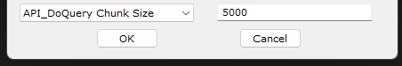

Application Note for QuNect ODBC for QuickBase
Creating a Connection String
A ODBC connection string tells the ODBC driver manager which ODBC driver to use and also contains various parameters that the ODBC driver manager passes down to the ODBC driver itself. The following configurator will walk you through all the options available for the QuNect ODBC for QuickBase ODBC driver.
Please enter the Quickbase Server name you type into the URL that you use to access Quickbase in your browser. This would be something like
mycompany.quickbase.com.
 Please watch this getting started video
to learn more about the Quickbase Server property. Please watch this getting started video
to learn more about the Quickbase Server property.
|
|
|
Use a DSN-less connection Use a DSN |
The first decision you have to make in creating a connection string is whether or not to use a DSN.
A DSN (Data Source Name) is a configuration for an ODBC driver that is stored in the registry.
When you install QuNect ODBC for QuickBase a DSNs are created that start with QuickBase via QuNect.
However the DSNs do not have a username, password or proper Quickbase Server associated with them until you configure them.
Please read the Getting Started application note or
watch this getting started video
to learn how to configure your DSNs.
After installation you can create your own additional DSNs and give them any name you wish.
|
|
Do not specify a username Specify a username |
If you've specifed a DSN above then you don't have to specify a username here and the username saved in the DSN will be used. You can specify a username here while using a DSN and the username you specify here will take precedence over the one saved in the DSN. Usernames are either the email address you signed up to Quickbase with or a Quickbase screen name. |
|
Do not specify a password or user token Specify a password Specify a user token Specify a user token (QuNect 2021 and later only) |
If you've specifed a DSN above then you don't have to specify a password or user token here and the password or user token saved in the DSN will be used. You can specify a password or user token here while using a DSN and the password or user token you specify here will take precedence over the one saved in the DSN. |
|
Do not use an application token Use your application token |
By default applications require application tokens unless you use a user token instead of a password. However application tokens can be turned off on an Quickbase application by Quickbase application basis.
If your Quickbase application requires application tokens then you may want to specify your own. You do not need an application token if your supply a usertoken.
Please read the Quickbase help on Application Tokens and
watch this getting started video
to learn more about the application tokens.
|
|
Do not try to connect through a proxy server Find a proxy server and connect through the proxy server |
In some local area networks you need to connect through a proxy server to get to Quickbase. If this is the case then you'll need to put this on the connection string. With MS Windows, if DETECTPROXY=1, and there is no proxy server QuNect ODBC for QuickBase will still successfully connect but with an initial delay of a quarter of a minute. On Linux, if DETECTPROXY=1, and there is no https_proxy environment variable, QuNect ODBC for QuickBase will return an error. |
|
I want to use field names I want to use fids |
Every Quickbase field has both a name and field identifier (fid). Field names can be changed by an administrator. Fids cannot be changed. Once a field is created it always has the same fid. Within a table a fid is unique and if a field is deleted its fid is never reused. So if you want to prevent the changing of field names from effecting your SQL statements then you should set this option to use fids. |
|
Empty text fields are not null Empty text fields are null |
Quickbase does not distinguish between an initially empty text field and a text field that used to contain text and no longer does. Another way to say this is that there is no such concept as a NULL value for text fields in Quickbase. So the default behaviour for QuNect ODBC for QuickBase is to never report text fields as having a NULL value. However you can force QuNect ODBC for QuickBase to report empty text fields as NULL. |
|
Leave numeric values unchanged when inserting or updating percent fields. Multiply numeric values by 100 when inserting or updating percent fields. |
Quickbase does not distinguish between an initially empty text field and a text field that used to contain text and no longer does. Another way to say this is that there is no such concept as a NULL value for text fields in Quickbase. So the default behaviour for QuNect ODBC for QuickBase is to never report text fields as having a NULL value. However you can force QuNect ODBC for QuickBase to report empty text fields as NULL. |
|
User fields are email addresses or screennames User fields are invariant user identifiers (uids) |
Useful if you want to be able to keep track if Quickbase users even when they change their email address or screennames. You can always get the email address or screenname from a formula text field that has this formula: ToText([User field name]). But there is no Quickbase formula that will give you a user field's uid value. |
|
Text File Attachment fields Binary File Attachment fields Download File Attachments to disc |
By default QuNect ODBC for QuickBase presents Quickbase file attachment fields as a text field containing a URL to the attached file. If you set this field to a fully qualified path on your local computer (e.g. c:\projects\inprogress\stage1.mpp), QuNect ODBC for QuickBase will upload that file from your hard drive to Quickbase. But you can change this behavior to make QuNect ODBC for QuickBase present file attachment fields as binary fields. This is particularly useful with SQL Server. In SQL Server binary fields are of type picture. You have another option instead of the binary field type you can specify a path to a local disc and QuNect ODBC for QuickBase will download attachments to that folder. Please read the application note entitled Downloading File Attachments from Quickbase into SQL Server for more information. |
|
Download only the current revision of file attachment fields Download all revisions of file attachment fields but only the file URL of the current revision Download all revisions of file attachment fields and all file URLs |
Only matters if you've chosen to specify that you want file attachments downloaded using the connection string option above. |
|
Generate an error if uploading a file that does not exist Ignore and continue when encountering missing files for upload |
QuNect ODBC for QuickBase will upload a local file to a file attachment field if you set the file attachment field's value to the path of a file on local disk. If the file does not exist an error is generated by default. If you use this connection string parameter you can ignore these errors when processing multiple records. |
|
Use the default duration of days on input and milliseconds on output Use a single specific duration on input and output |
Duration fields (a numeric field) present the number of milliSeconds.
And when updated or inserted the supplied number is interpreted as days.
However if the DURATION parameter is set to either:
|
|
Use the default set of characters for field names Specify the set of characters for field names |
Quickbase allows a far wider range of characters in field names and table names than most other database systems. Here you can specify which characters QuNect ODBC for QuickBase allows in field names and table names. Characters that are not allowed are replaced with the underscore character. This setting does not impact field names and table names appearing in MS Access tables linked with QuNect ODBC for QuickBase. |
|
Do not specify temp directory Specify temp directory |
Versions of QuNect ODBC for QuickBase before the 2018 version use temporary files to perform sorting operations that Quickbase cannot handle. Versions 2018 forward perform all sorting operations in memory. This setting allows you to specify the directory where these temporary files will be created. You can leave this setting blank and QuNect ODBC for QuickBase will ask the operating system to designate a temporary directory. |
|
Do not use table aliases Use table aliases |
Please read the application note on table aliases for more information. |
|
Do not log SQL statements. Log SQL statements to C:\Windows\Temp\qbdODBC.log or /tmp/qdbODBC.log on Linux. |
Logging of SQL statements goes to the file C:\windows\temp\qdbODBC.log on computers running MS Windows. Otherwise the log file is /tmp/qdbODBC.log on Linux |
|
Do not log Quickbase API calls. Log Quickbase API calls to C:\Windows\Temp\qbdODBC.log or /tmp/qdbODBC.log on Linux. |
Logging of Quickbase API calls goes to the file C:\windows\temp\qdbODBC.log on computers running MS Windows. Otherwise the log file is /tmp/qdbODBC.log on Linux |
|
Use credentials in DSN Use credentials in connection string |
Some applications like Tableau Server will specify a connection string with a DSN parameter yet they will also specify UID and PWD parameters in the connection string. Normally the UID parameter (Quickbase username) and PWD (Quickbase password) parameters in the connection string supercede the Quickbase username and password settings in the DSN. This parameter allows you to force QuNect to use the UID and PWD from the DSN even if these parameters exist in the connection string. |
|
For each INSERT or UPDATE statement, process all Quickbase records in one API operation, if possible. The Quickbase API has an upper limit on the number of bytes allowed in one operation. For each INSERT or UPDATE statement, process all Quickbase records in multiple API operations, if possible. If the number of bytes to be updated is below the threshold set below then only one API operation will occur. |
The number of bytes you want in a single UPDATE or INSERT operation. You'll need make sure that you set this high enough so that it's greater than the largest number of bytes in a single updated or inserted record. This setting does not limit the number of records that can be processed by one SQL statement. QuNect ODBC for QuickBase will break up a large INSERT or UPDATE statement into multiple Quickbase API calls if a timeout error occurs. However setting an upper limit on the number of bytes in one operation can improve throughput by avoiding errors and retries with smaller batches of records |
|
Use the default value of 1000 records per API_DoQuery call. Use the value below instead of the default value. Enter the number of records requested per API_DoQuery call.. |
If you set this value to high then you QuickBase will respond with error number 75, "View too large". Then QuNect ODBC for QuickBase will try again asking for half the number of records. This will be repeated until Quickbase stops responding with error 75. This retry process will actually increase the number of API calls per record retrieved rather than minimizing the number of API calls per record retrieved. So the records per API_DoQuery call must be set with caution to make sure you don't encounter error 75. Logging QuNect ODBC for QuickBase API calls will help you determine if you're encountering error 75's. You can also use the "Optional Advanced Features" "API_DoQuery Chunk Size" setting at the bottom of the DSN dialog to do the same thing.  |
|
Show me all the tables I have access to. Show me only the tables I have admin access to. |
Some organizations have Quickbase applications that they share company wide and the number of tables a user has access to can be overwhelming. This is a way to limit the lis of tables. |
|
Do not allow updates to key field values Allow updates to key field values. |
If you try to change a key field value with an UPDATE statement QuNect ODBC for QuickBase will create a new record with that key field value unless you choose the lower of the two radio buttons above. |
|
Create an error if encountering duplicate field names. Ignore duplicate field names. |
Since some applications balk at duplicate field names without explaining what the problem is, QuNect ODBC for QuickBase by default will report an error if it encounters duplicate field names. |
|
Follow relationships to find lookup field properties. Don't follow relationships and use default field properties for lookup fields. |
This can be useful to minimize API calls and speedup the establishment of an ODBC connection. However this is at the cost of using default field properties for lookup fields. For instance the source field of a lookup text field might have a max length of 1000 characters. But if the relationships are not followed to discover this setting, then the lookup field text will be truncated to the default text field length of 255 characters. |